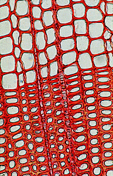

When the first Europeans arrived in Mexico, early in the sixteenth century, they found a complex civilisation with elaborate rituals. These rituals were controlled by the Aztec priests, who may have used elaborate turquoise mosaics, like the serpent shown here.
Because of the excellent preservation of the mosaics, it was not appropriate to remove samples from the mosaic designs for analysis. Instead, we have examined these precious artefacts using non-destructive methods that require no sampling. Examination of the mosaics under an optical microscope has allowed the wide range of materials used for these objects to be identified.
 The mosaic design was made by sticking hundreds of tesserae (small tiles) onto a model. Like the serpent shown here, most of the mosaics were laid down on a 'model' made of wood. Optical microscopy has allowed the wood to be identified by comparison with reference specimens, like the sample of pine shown here.